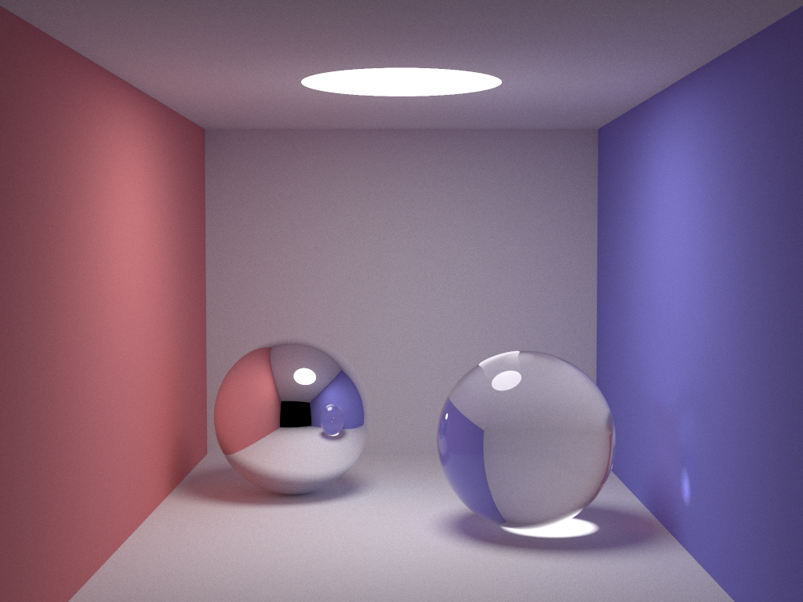

LiteratePT
One of my favourite compute science books is "Physically Based Rendering" by Matt Pharr, Wenzel Jakob and Greg Humphreys (PBRT). For me, this book put the concept of Literate Programming on the map, as well as giving an awesome overview of the technologies that go into graphics rendering. Now PBRT is more than 1200 pages, so I thought what better than to create a tribute of some smaller size?
Over time, there have been developed some ray-tracers of truly miniscule size. It is amazing how much you can do in little code. For me the most clear example is SmallPT by Kevin Beason. SmallPT is a global illumination ray tracer in 100 lines of C++.
{style='width:100%'}
This is a translation into Rust; not in a 100 lines, but like PBRT, extremely literate. The entirety of this implementation is contained in a single Markdown file. To extract the source code, you may use Entangled, or to render the published version, use Pandoc. All the math and equations are explained, and I've tried to explain some concepts in Rust.
TODO
- Explain the sub-pixel sampling
-
Explain use of Rayon in
Image::for_each -
Explain
RGBColourstructure - Add command-line interface
- Fix performance issues with writing output
- Add proper progress bar
- Simplify recursion pattern
Getting started with Rust
The easiest way to install the Rust compiler is through the rustup command. This will install both the Rust compiler rustc and its accompanying package manager cargo. You'd normally start a new project by running cargo init. This command creates the skeleton structure of a Rust project: a Cargo.toml and a "Hello World" program in src/main.rs. Since my goal is to have everything in a single Markdown file, I include the Cargo.toml here:
[package]
name = "literatept"
version = "0.2.0"
authors = ["Johan Hidding <j.hidding@esciencecenter.nl>"]
edition = "2018"
[profile.release]
opt-level = 3
debug = 0
strip = "debuginfo"
[dependencies]
<<dependencies>>
[dev-dependencies]
<<dev-dependencies>>
Now, if I want to introduce some features to this program that require external packages (called crates in Rust), I can do so by extending on the <<dependencies>> section. For example, I will need a random number generator. This is most commonly available in the rand crate:
rand = "0.8.5"
Outline
Everything about graphics rendering happens in a three-dimensional world, so I will need to explain some of the vector mathematics that we're using. In SmallPT, the vec3 type is then doubling up as a type for colours. Since we're not trying to be minimal here, I will treat colours entirely separately from vector algebra. After this ground work, we need to implement some geometry primitives: spheres, rays and how they intersect. When we have that, we can describe a scene. The SmallPT scene is a modification of the Cornell box, that consists solely of spheres, some so large that they appear as a nearly flat surface.
This all leads up to the core of the matter: path tracing. How do we model every possible path that a beam of light can take to arrive in our camera?
The program is not complete before we write a main function, including code to write the image to a PPM file, and some user interaction: command-line arguments and a friendly progress bar.
rayon = "1.5.3"
indicatif = { version = "0.16.2", features = ["rayon"] }
argh = "0.1.7"
extern crate rayon;
use rayon::prelude::*;
$$\renewcommand{\vec}[1]{{\bf #1}}$$
Vectors
The use of three-component vectors is ubiquitous in this little program.
<<vector>>
#[cfg(test)]
mod tests {
use super::*;
use quickcheck::*;
<<vector-tests>>
}
The Vec3 type has three public members \(x\), \(y\) and \(z\). We define the struct and a short-hand helper function vec.
#[derive(Clone,Copy,Debug)]
pub(crate) struct Vec3 {
pub x: f64,
pub y: f64,
pub z: f64
}
pub(crate) const fn vec(x: f64, y: f64, z: f64) -> Vec3 {
Vec3 { x: x, y: y, z: z }
}
We derive the Clone, Copy, and Debug traits, meaning that we can print debug statements involving Vec3 instances, and that we can clone instances usinge the .clone() method. The Copy trait means that the Vec3 can be copied implicitly, creating call-by-value semantics on this type.
:::: {.alert .alert-info}
Why not a class?
Rust doesn't have classes. Instead, you define a struct with the data elements, and then implement one or more traits on top of that. Data hiding, access patterns, inheritance and what-have-you-not in object-oriented styles of programming can still be achieved using traits. For more information, see The Rust Book, chapter 17.
::::
Operators
Each of the overloaded operators only occupy a single line of code in SmallPt, but this is probably better. Rust has a trait for every standard operator in the language. These operators are syntactic sugar for the relevant function calls in each trait. Here we define +, and - (both unary and binary forms).
impl std::ops::Add for Vec3 {
type Output = Self;
fn add(self, other: Self) -> Self {
Self { x: self.x + other.x
, y: self.y + other.y
, z: self.z + other.z }
}
}
impl std::ops::Sub for Vec3 {
type Output = Self;
fn sub(self, other: Self) -> Self {
Self { x: self.x - other.x
, y: self.y - other.y
, z: self.z - other.z }
}
}
impl std::ops::Neg for Vec3 {
type Output = Self;
fn neg(self) -> Self::Output {
Self { x: -self.x, y: -self.y, z: -self.z }
}
}
SmallPt defines four kinds of multiplication: scaling, point-wise multiplication, dot product and outer product. The point-wise multiplication is only used to manipulate colors, for which we'll use separate structures.
Here's scaling,
impl std::ops::Mul<f64> for Vec3 {
type Output = Self;
fn mul(self, s: f64) -> Self {
Self { x: self.x * s
, y: self.y * s
, z: self.z * s }
}
}
the dot-product,
$$\vec{a} \cdot \vec{b} = a_x b_x + a_y b_y + a_z b_z$$
impl std::ops::Mul<Vec3> for Vec3 {
type Output = f64;
fn mul(self, other: Self) -> f64 {
self.x * other.x +
self.y * other.y +
self.z * other.z
}
}
and outer product for which we abuse the % operator,
$$\vec{a} \wedge \vec{b} = \det \begin{pmatrix} \hat{x} & \hat{y} & \hat{z}\ a_x & a_y & a_z \ b_x & b_y & b_z \end{pmatrix}$$
impl std::ops::Rem for Vec3 {
type Output = Self;
fn rem(self, other: Self) -> Self {
Self { x: self.y * other.z - self.z * other.y
, y: self.z * other.x - self.x * other.z
, z: self.x * other.y - self.y * other.x }
}
}
Vectors can be normalized to a unit-vector.
impl Vec3 {
pub fn abs(self) -> f64 {
(self * self).sqrt()
}
pub fn normalize(self) -> Self {
self * (1.0 / self.abs())
}
}
Tests
We use the quickcheck crate to do some property testing on the Vec3 type. The idea of property testing is that you define some properties (duh!) on a type that should always hold. Then, if you have a way to generate arbitrary elements of your type, you can see if these properties do indeed hold. In many cases where mathematics or physics is involved, these test are expressed in much cleaner code than the usual unit tests.
quickcheck = "1.0.3"
quickcheck_macros = "1.0.0"
#[cfg(test)]
extern crate quickcheck;
#[cfg(test)]
#[macro_use(quickcheck)]
extern crate quickcheck_macros;
We need to be able to generate Arbitrary instances of Vec. I'm not sure if this will ever yield a zero-vector, or a sequence of vectors that lie in the same plane. We do want to check our properties on reasonable numbers though.
impl Arbitrary for Vec3 {
fn arbitrary(g: &mut Gen) -> Self {
let x = f64::arbitrary(g);
let y = f64::arbitrary(g);
let z = f64::arbitrary(g);
vec(x, y, z)
}
}
impl Vec3 {
fn is_finite(&self) -> bool {
self.x.is_finite() && self.y.is_finite() && self.z.is_finite()
}
fn reasonable(&self) -> bool {
self.is_finite() &&
self.x.log2().abs() < 16.0 &&
self.y.log2().abs() < 16.0 &&
self.z.log2().abs() < 16.0
}
}
Now we can check that for any vectors \(\vec{a}\) and \(\vec{b}\), we have,
$$(\vec{a} \wedge \vec{b}) \cdot \vec{a} = 0,$$
#[quickcheck]
fn outer_product_orthogonal(a: Vec3, b: Vec3) -> TestResult {
if !(a.reasonable() && b.reasonable()) { return TestResult::discard(); }
let c = a % b;
TestResult::from_bool((a * c).abs() < 1e-6 && (b * c).abs() < 1e-6)
}
that any normalized vector has length 1,
#[quickcheck]
fn normalized_vec_length(a: Vec3) -> TestResult {
if !a.reasonable() || (a * a) <= 0.0 { return TestResult::discard(); }
let b = a.normalize();
TestResult::from_bool((1.0 - b * b).abs() < 1e-6)
}
and that the outer product upholds anti-symmetry,
$$\vec{a} \wedge \vec{b} = - \vec{b} \wedge \vec{a}.$$
#[quickcheck]
fn outer_product_anti_symmetry(a: Vec3, b: Vec3) -> TestResult {
if !(a.reasonable() && b.reasonable()) { return TestResult::discard(); }
let c = a % b;
let d = b % a;
TestResult::from_bool((c + d).abs() < 1e-6)
}
Colours
A colour on a computer is described by three numbers: red, green and blue intensity. There is a lot more interesting things to say about colour profiles, gamuts, CMYX, CIELAB or plain RGB encoding, but what it boils down to is the following: in the end we want RGB to store. So we may define a colour to be anything that converts to RGB.
#[inline]
pub(crate) fn clamp(x: f64) -> f64
{
if x < 0. { 0. } else if x > 1. { 1. } else { x }
}
pub trait Colour: Sized
+ std::ops::Add<Output=Self>
+ std::ops::Mul<Output=Self>
+ std::ops::Mul<f64, Output=Self> {
fn to_rgb(&self) -> (f64, f64, f64);
fn clamp(&self) -> Self;
fn max(&self) -> f64 {
let (r, g, b) = self.to_rgb();
if r > g && r > b { r }
else if g > b { g }
else { b }
}
fn to_u24(&self) -> (u8, u8, u8) {
let to_int = |x| (clamp(x).powf(1./2.2) * 255. + 0.5).floor() as u8;
let (r, g, b) = self.to_rgb();
(to_int(r), to_int(g), to_int(b))
}
}
We can (and will) have a simple implementation in terms of a three-tuple of f64.
#[derive(Clone,Copy,Debug)]
pub(crate) struct RGBColour (f64, f64, f64);
pub(crate) const fn rgb(r: f64, g: f64, b: f64) -> RGBColour {
RGBColour (r, g, b)
}
impl Colour for RGBColour {
fn to_rgb(&self) -> (f64, f64, f64) {
let RGBColour(r, g, b) = self;
(*r, *g, *b)
}
fn clamp(&self) -> Self {
let RGBColour(r, g, b) = self;
RGBColour(clamp(*r), clamp(*g), clamp(*b))
}
}
Constants
The two most important colours are black and white:
pub(crate) const BLACK: RGBColour = rgb(0.0, 0.0, 0.0);
pub(crate) const WHITE: RGBColour = rgb(1.0, 1.0, 1.0);
Operators
Furthermore, we need to add subtract and multiply colours. For colours it makes most sense to have point-wise multiplication.
impl std::ops::Add for RGBColour {
type Output = Self;
fn add(self, other: Self) -> Self {
let RGBColour(r1,g1,b1) = self;
let RGBColour(r2,g2,b2) = other;
RGBColour(r1+r2,g1+g2,b1+b2)
}
}
impl std::ops::Mul for RGBColour {
type Output = Self;
fn mul(self, other: Self) -> Self {
let RGBColour(r1,g1,b1) = self;
let RGBColour(r2,g2,b2) = other;
RGBColour(r1*r2,g1*g2,b1*b2)
}
}
impl std::ops::Mul<f64> for RGBColour {
type Output = Self;
fn mul(self, s: f64) -> Self {
let RGBColour(r1,g1,b1) = self;
RGBColour(r1*s,g1*s,b1*s)
}
}
Geometry
With floating-point calculations, round-off can become a problem. If we bounce a ray off a sphere, how do we make sure that we don't detect another intersection with the same sphere? One way is to make sure that every ray travels a mininum distance before bouncing off anything. We'll call this distance EPS, short for epsilon, being the greek letter \(\epsilon\), generally denoting small quantities.
const EPS: f64 = 1e-4;
Objects
The only objects in our scene are spheres. When we do path tracing, we also need rays.
struct Ray
{ pub origin: Vec3
, pub direction: Vec3 }
struct Sphere
{ pub radius: f64
, pub position: Vec3
<<sphere-members>>
}
Intersections
The Shpere has a method to detect intersection with a Ray.
impl Sphere {
fn intersect(&self, ray: &Ray) -> Option<f64> {
<<sphere-ray-intersect>>
}
}
The equation for the surface of a sphere at position $\vec{p}$ and radius $r$ is,
$$S:\ (\vec{p} - \vec{x})^2 = r^2,$${#eq:sphere}
and a ray from origin $\vec{o}$ and direction $\vec{\hat{d}}$ describes the half-line,
$$L:\ \vec{x} = \vec{o} + t\vec{\hat{d}}.$${#eq:ray}
Equating these gives a quadratic equation for $t$, taking $\vec{q} = \vec{p} - \vec{o}$,
$$\begin{align} S \cap L:\ &(\vec{p} - \vec{o} - t\vec{\hat{d}})^2 = r^2\ &t^2 - 2t\vec{\hat{d}}\vec{q} + \vec{q}^2 - r^2 = 0\ &t = \vec{\hat{d}}\vec{q} \pm \sqrt{(\vec{\hat{d}}\vec{q})^2 - \vec{q}^2 + r^2}. \end{align}$${#eq:sphere-ray-intersect}
We first compute the determinant (part under the square root),
let q = self.position - ray.origin;
let b = ray.direction * q;
let r = self.radius;
let det = b*b - q*q + r*r;
If it is negative, there is no solution and the ray does not intersect with the sphere.
if det < 0. {
return None;
}
Otherwise, it is safe to compute the square-root and return the first intersection at a distance larger than EPS.
let rdet = det.sqrt();
if b - rdet > EPS {
Some(b - rdet)
} else if b + rdet > EPS {
Some(b + rdet)
} else {
None
}
Properties
A sphere has material properties. We can choose between diffuse, specular and refractive type.
enum Reflection
{ Diffuse
, Specular
, Refractive }
:::: {.alert .alert-info}
Sum types
Note that the Rust enum types are much richer than the enum you may be used to from C/C++. Together with struct, enum gives the corner stones of algebraic data types. Where a struct collects different members into a product type, an enum is a sum type, meaning that it either contains one value or the other.
::::
, pub emission: RGBColour
, pub colour: RGBColour
, pub reflection: Reflection
Scene
The scene in SmallPt is an adaptation of the Cornell box.
const SPHERES: [Sphere;9] =
<<scene-spheres>>
The scene consists of a red ceiling,
[ Sphere { radius: 1e5, position: vec(1e5+1., 40.8, 81.6), emission: BLACK
, colour: rgb(0.75, 0.25, 0.25), reflection: Reflection::Diffuse }
four grey walls, one of which is black to emulate photons escaping,
, Sphere { radius: 1e5, position: vec(50., 40.8, 1e5), emission: BLACK
, colour: rgb(0.75, 0.75, 0.75), reflection: Reflection::Diffuse }
, Sphere { radius: 1e5, position: vec(50., 40.8, -1e5+170.), emission: BLACK
, colour: BLACK, reflection: Reflection::Diffuse }
, Sphere { radius: 1e5, position: vec(50., 1e5, 81.6), emission: BLACK
, colour: rgb(0.75, 0.75, 0.75), reflection: Reflection::Diffuse }
, Sphere { radius: 1e5, position: vec(50., -1e5+81.6, 81.6), emission: BLACK
, colour: rgb(0.75, 0.75, 0.75), reflection: Reflection::Diffuse }
a blue floor,
, Sphere { radius: 1e5, position: vec(-1e5+99., 40.8, 81.6), emission: BLACK
, colour: rgb(0.25, 0.25, 0.75), reflection: Reflection::Diffuse }
a glass and a metal sphere,
, Sphere { radius: 16.5, position: vec(27., 16.5, 47.), emission: BLACK
, colour: rgb(0.999, 0.999, 0.999), reflection: Reflection::Specular }
, Sphere { radius: 16.5, position: vec(73., 16.5, 78.), emission: BLACK
, colour: rgb(0.999, 0.999, 0.999), reflection: Reflection::Refractive }
and a plafonniere
, Sphere { radius: 600., position: vec(50., 681.6-0.27, 81.6)
, emission: rgb(12.0, 12.0, 12.0), colour: BLACK
, reflection: Reflection::Diffuse } ];
Given this scene, we can define the function intersect which computes the first intersection of a ray with any of the objects in the scene. If the ray intersects, a tuple is returned giving the distance and reference to the obstructing object.
fn intersect(ray: &Ray) -> Option<(f64, &'static Sphere)> {
let mut result : Option<(f64, &Sphere)> = None;
for s in &SPHERES {
if let Some(d) = s.intersect(ray) {
if result.is_none() || result.unwrap().0 > d {
result = Some((d, s));
}
}
}
result
}
It feel like we've done a lot of work here, but we've only arrived at line 48 of SmallPt.
Path tracing
This is where all the physics happens. We need to generate random numbers.
extern crate rand;
use rand::Rng;
use std::f64::consts::PI;
The radiance function computes how many photons are traveling at a certain position in space from a certain direction.
:::: {.alert}
Recursion
One major change with respect to the original SmallPT is the recursion. SmallPT uses true recursion to compute the radiance of a ray. In Rust, this has led to some instances where a stack overflow was triggered. We may use a stack based implementation to prevent this from happening, but this has proven to be quite a bit slower. I ended up using a loop, modifying the traced path in place. Only in the case of partial reflection do we recursively call the radiance function.
The result of each recursive radiance computation goes into an affine transformation ($ax + b$). We may compose two transformations
$$(x \to ax + b) \circ (y \to cy + d) = y \to a(cy + d) + b = y \to acy + ad + b,$$
meaning that if we express an affine transformation as a pair $(a, b)$ and a second $(c, d)$, we have $(a, b) \circ (c, d) = (ac, ad + b)$. This means we have a compact way to codify the contribution of each scattered ray. ::::
fn radiance(ray: &mut Ray, mut depth: u16) -> RGBColour {
let mut rng = rand::thread_rng();
let mut colour = WHITE;
let mut output = BLACK;
loop {
<<do-intersect>>
<<russian-roulette-1>>
<<compute-normal>>
<<do-reflect>>
}
}
The second argument keeps track of how deep we are tracing. It is used as a control to switch between sampling methods. One method is to reduce the brightness of the ray at every reflection off a diffuse object until we hit a light source. The second method, also known as Russion Roulette, is to keep the brightness of the ray constant, but only reflect with a probability given by the colour of the object. The first method will always give a nice smooth image but may take a long time wasted on very dim rays. The Russian Roulette wastes less time per sample, but produces grainy images at low sample rates. That is why SmallPt switches sampling methods if we are deeper than $n$ reflections.
First, we need to see if the ray intersects any object in the scene; if not, we return the colour BLACK.
let hit = intersect(&ray);
if hit.is_none() { return output; }
let (distance, object) = hit.unwrap();
output = output + object.emission * colour;
Russian Roulette 1
The colour $f$ of an object reduces the radiance of a ray compared to the radiance of the reflected ray.
$$r = f r_{\rm refl}.$${#eq:reflected-radiance}
The first Russian Roulette happens at an integration depth of 5. The value $p$ is the probability of the ray being reflected. The value of $p$ can be anything between $0$ and $1$, and the math would still work out, however we choose it to be the maximum value of the colour of the object. Once the ray has overcome the odds of being absorbed, we have to renormalize the colour. If $p = 1$ the colour should remain the same. In other words,
$$r = \frac{1}{N}\sum_{\rm N} p f' r_{\rm refl} = f r_{\rm refl},$${#eq:russian-roulette}
meaning that $$f' = f / p$$. If the ray got absorbed, the radiance equals the emission of the object.
let mut f = object.colour;
let p = f.max();
depth += 1;
if depth > 5 {
if rng.gen::<f64>() < p {
f = f * (1. / p);
} else {
return output;
// current = stack.pop();
// continue;
}
}
Normals
Now that we know that we hit an object, we need to compute the normal vector. Let $x$ be the position where the ray hits the object, and $\vec{n}$ be the normal vector (outward pointing) of the object.
let x = ray.origin + ray.direction * distance;
let n = (x - object.position).normalize();
It could be that we're inside the object. In that case, the normal of reflection is opposite the normal of the object.
let n_refl = if n * ray.direction < 0. { n } else { -n };
Reflection
We're at the point that we need to compute how much light is reflected. Of course, this depends on the type of material that the object is made of. SmallPt has three material types, diffuse, specular, and refractive, that each have their own physics.
match object.reflection {
Reflection::Diffuse => {
<<diffuse-reflection>>
}
Reflection::Specular => {
<<specular-reflection>>
}
Reflection::Refractive => {
<<refractive-reflection>>
}
};
Diffuse reflection
There are many types of diffuse reflection. You could imagine a surface where rays have equal probability of reflecting to any direction. This would mean sampling vectors on a hemisphere. We have a uniform probability over longitude:
let phi = 2.*PI * rng.gen::<f64>();
Taking $\theta$ to be the angle of incidence to the normal of the surface, we have a $p(\theta) \sim \sin \theta$ probability over latitude. The inverse CDF sampling method then gives than $\cos \theta$ has a uniform distribution in the interval $[0, 1]$.
However, there is a second effect. If you shine a uniform bundle of light on a surface at an angle, the light intensity drops with a factor $\cos \theta$. The combination of sampling the hemisphere and the lighting is known has cosine-weighted sampling, and there is a trick called Malley's Method. We can sample points on a uniform disc, and project those onto the hemisphere [Pbr-13.6.3].
On a disc we have $p(r) \sim r$, so $p(r^2) \sim 1$,
let r2 : f64 = rng.gen();
let r = r2.sqrt();
We need a set of orthogonal axes in the plane of reflection. We pick a vector to start with, and compute the outer product with the normal to give one vector $\vec{u}$ orthogonal to $\vec{n}$. To prevent numberloss, the first vector should not be too close to the normal. The second vector $\vec{v}$ is found by taking another outer product of $\vec{u} \times \vec{n}$.
let ncl = if n_refl.x.abs() > 0.1 { vec(0., 1., 0.) } else { vec(1., 0., 0.) };
let u = (ncl % n_refl).normalize();
let v = n_refl % u;
The direction of the reflected ray is now known.
let d = (u*phi.cos()*r + v*phi.sin()*r + n_refl*(1.-r2).sqrt()).normalize();
To compute the radiance, we need to know the radiance from the reflected ray.
*ray = Ray {origin: x, direction: d};
colour = f * colour;
Specular reflection
Specular reflection means we have to mirror the incident ray with respect to the normal. This means that only the $\vec{n}$ component of the direction flips,
$$\vec{\hat{d}}' = \vec{\hat{d}} - 2 \vec{\hat{n}} (\vec{\hat{n}} \cdot \vec{\hat{d}})$$.
let d = ray.direction - n * 2.*(n*ray.direction);
*ray = Ray {origin: x, direction: d};
colour = f * colour;
Refraction
Now some real optics! Discarding polarisation, there are several ways a photon may go at the boundary between two transparent media: total internal reflection, refraction, or partial reflection.
There is always a reflective component,
let d = ray.direction - n * 2.*(n*ray.direction);
let reflected_ray = Ray { origin: x, direction: d };
We need to know if we're moving into or out of the object.
let into = n * n_refl > 0.;
Refractive index
The refractive index of glass can vary, but $n = 1.5$ seems reasonable.
const N_GLASS: f64 = 1.5;
const N_AIR: f64 = 1.0;
Depending on whether we're entering or leaving the glass object, the effective index of refraction is $n_{\rm air} / n_{\rm glass}$ or $n_{\rm glass} / n_{\rm air}$.
let n_eff = if into { N_AIR / N_GLASS } else { N_GLASS / N_AIR };
Total internal reflection
Total internal reflection happens if the angle of incidence is larger than some critical angle $\theta_c$, given by
$$\theta_c = \arcsin \frac{n_{\rm outside}}{n_{\rm inside}}.$${#eq:tir-critical-angle}
We can easily compute $\mu = \cos \theta$ using the inner product, so with a little algebra, total-internal-reflection happens if,
$$\begin{align} \sin \theta &> {n_o \over n_i}\ \sqrt{1 - \cos^2 \theta} &> {n_o \over n_i}\ 1 - \mu^2 &> \left({n_o \over n_i}\right)^2\ n_{\rm eff}^2 \left(1 - \mu^2\right) &> 1 \end{align}$$
let mu = ray.direction * n_refl;
let cos2t = 1. - n_eff*n_eff*(1. - mu*mu);
if cos2t < 0. {
<<total-internal-reflection>>
} else {
<<partial-reflection>>
}
In that case, we recurse with the reflected ray.
*ray = reflected_ray;
colour = f * colour;
Partial reflection
In the case of partial reflection, we need to compute also the angle of the refracted ray. We have Snell's law,
$${\sin \theta_i \over \sin \theta_o} = {n_o \over n_i} = {1 \over n_{\rm eff}}.$${#eq:snellius}
We can decompose the incident ray direction into a normal component $d_n$ and a transverse component $d_t$. Then $|d_t| = \sin \theta_i$, and $|d_n| = \vec{d} \cdot \vec{n} = \cos \theta_i$. Similarly we can decompose the outgoing ray direction $\vec{d}'$,
$$\begin{align} d_t' &= n_{\rm eff} (\vec{d} - \mu \vec{n})\ d_n' &= \sqrt{1 - n_{\rm eff}^2 |d_t|^2} \vec{n}, \end{align}$$
where $|d_t|^2 = 1 - \mu^2$. That is convenient, because it turns out we have already computed $|d_n'|$, it is the square root of cos2t. Now, we also see where the total internal reflection comes from; there is no solution to Snell's law for those angles.
let tdir = (ray.direction * n_eff - n_refl * (mu*n_eff + cos2t.sqrt())).normalize();
Next, we need to compute the fraction of light that is reflected. The Fresnel equations describe this process, but they are very complicated and also deal with polarisation. We use Schlick's approximation instead [Schlick1994],
$$R(\theta) = R_0 + (1 - R_0) (1 - \mu)^5,$$
where
$$R_0 = \left(\frac{n_i - n_o}{n_i + n_o}\right)^2.$$
const R0: f64 = (N_GLASS - N_AIR) * (N_GLASS - N_AIR)
/ ((N_GLASS + N_AIR) * (N_GLASS + N_AIR));
let c = 1. - (if into { -mu } else {tdir * n});
let re = R0 + (1. - R0) * c.powf(5.0);
let tr = 1. - re;
Russian Roulette 2
let p = 0.25 + 0.5*re;
let rp = re/p;
let tp = tr/(1.-p);
if depth > 2 {
if rng.gen::<f64>() < p {
*ray = reflected_ray;
colour = f * colour * rp;
} else {
*ray = Ray { origin: x, direction: tdir };
colour = f * colour * tp;
}
} else {
let r = radiance(&mut Ray {origin: x, direction: tdir}, depth);
output = output + r * f * colour * tr;
*ray = reflected_ray;
colour = f * colour * re;
}
Image
struct Image
{ width: usize
, height: usize
, pub data: Vec<RGBColour> }
impl Image {
fn new(width: usize, height: usize) -> Image {
Image {
width: width, height: height,
data: vec![BLACK; width*height]
}
}
fn for_each<F>(&mut self, f: F)
where F: Send + Sync + Fn(usize, usize, &mut RGBColour)
{
use indicatif::ParallelProgressIterator;
// use rayon::iter::{ParallelIterator, IntoParallelRefIterator};
let w = self.width;
let size = self.size() as u64;
self.data
.par_iter_mut().progress_count(size)
.enumerate()
.for_each(|(i, c)| {
let x = i % w;
let y = i / w;
f(x, y, c);
});
}
fn size(&self) -> usize { self.width * self.height }
<<print-ppm>>
}
Writing to PPM
To write output efficiently, we need a BufWriter instance.
fn print_ppm(&self, path: &str) -> std::io::Result<()> {
use std::fs::File;
use std::io::Write;
let file = File::create(path)?;
let mut out = std::io::BufWriter::new(file);
write!(&mut out, "P3\n{} {}\n{}\n", self.width, self.height, 255)?;
for rgb in &self.data {
let (r, g, b) = rgb.to_u24();
write!(&mut out, "{} {} {} ", r, g, b)?;
}
Ok(())
}
Main
Argument parsing
extern crate argh;
use argh::FromArgs;
const SAMPLES: usize = 100;
const WIDTH: usize = 640;
const HEIGHT: usize = 480;
#[derive(FromArgs)]
/// Renders the Cornell box as interpreted by Kevin Beason's SmallPt
pub struct Arghs {
/// optional sample size (100)
#[argh(option, short = 's', default = "SAMPLES")]
samples: usize,
/// optional thread count
/// the default (0) will take the systems logical cpu count
#[argh(option, short = 't', default = "0")]
threads: usize,
/// optional stack size in MB per thread
#[argh(option, short = 'z', default = "8")]
stack: usize,
/// optional image size dimensions WxH (640x480)
#[argh(option, from_str_fn(into_plot_dimensions), default = "(WIDTH, HEIGHT)")]
wxh: (usize, usize),
}
// Helper function for parsing plot dimensions from command line arguments.
fn into_plot_dimensions(dim: &str) -> Result<(usize, usize), String> {
let (w, h) = dim
.split_once('x')
.ok_or("dimensions do not parse, no delimiter?")?;
let w = w.parse::<usize>().map_err(|e| e.to_string())?;
let h = h.parse::<usize>().map_err(|e| e.to_string())?;
Ok((w, h))
}
The main file
<<import-quickcheck>>
<<imports>>
extern crate indicatif;
mod vec3;
use vec3::*;
mod colour;
use colour::*;
<<constants>>
<<ray>>
<<material>>
<<sphere>>
<<scene>>
<<path-tracing>>
<<image>>
<<arghs>>
fn main() -> std::io::Result<()> {
// use rayon::current_thread_index;
// rayon::ThreadPoolBuilder::new().num_threads(4).build_global().unwrap();
let args: Arghs = argh::from_env();
let (w, h) = args.wxh;
let samps = args.samples / 4;
rayon::ThreadPoolBuilder::new()
.num_threads(args.threads)
.stack_size(args.stack * 1024 * 1024)
.build_global()
.unwrap();
let cam = Ray { origin: vec(50., 52., 295.6), direction: vec(0.0, -0.045, -1.0).normalize() };
let cx = vec(w as f64 * 0.510 / h as f64, 0., 0.);
let cy = (cx % cam.direction).normalize() * 0.510;
let mut img = Image::new(w, h);
eprintln!("Rendering ({} spp)", samps*4);
img.for_each(|x, y, c| {
let mut rng = rand::thread_rng();
for sy in 0..2 {
for sx in 0..2 {
let mut r = BLACK.clone();
for _ in 0..samps {
let r1 = 2. * rng.gen::<f64>();
let dx = if r1 < 1. { r1.sqrt() - 1. } else { 1. - (2. - r1).sqrt() };
let r2 = 2. * rng.gen::<f64>();
let dy = if r2 < 1. { r2.sqrt() - 1. } else { 1. - (2. - r2).sqrt() };
let d = cx*( ( (sx as f64 + 0.5 + dx) / 2. + x as f64) / w as f64 - 0.5 )
+ cy*( ( (sy as f64 + 0.5 + dy) / 2. + (h - y - 1) as f64) / h as f64 - 0.5 )
+ cam.direction;
r = r + radiance(&mut Ray {origin: cam.origin + d*140., direction: d.normalize()}, 0) * (1./samps as f64);
}
*c = *c + r.clamp() * 0.25;
}
}
});
eprintln!("\nWriting image.");
img.print_ppm("image_rust.ppm")
}